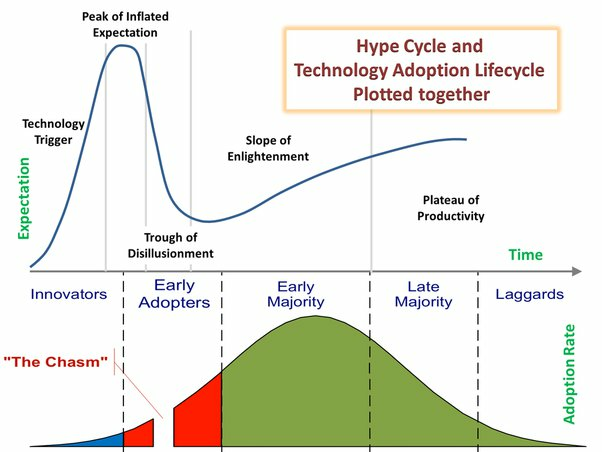
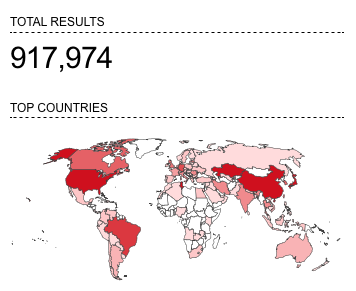

Discontinued IoT products¶

I had an interesting chat with a friend: he told me that the app that manages his photovoltaic system had stopped working. The vendor had upgraded the cloud API and broken compatibility with older products. I expect to see this more and more in the future.
How Firms Develop APIs¶
I worked with developers for many years. In my experience, once a project starts, the developers analyze, choose the proper framework, build the software and test it, maybe with a CI/CD approach, and everything is fine. Sooner or later, though, the framework becomes obsolete, and so do the libraries and the operating systems. Sooner or later, a new OS will not be compatible with the old versions of the frameworks, and the code will probably not be compatible with the new versions of the framework either.
To me, this is a small form of "lock-in": the software we develop is bound to a specific version of a specific framework, installable on a specific operating system. Sooner or later, upgrading the whole ecosystem requires a deep review and update of the code.
And that is the problem.
Product Lifecycle¶
What is missing from the beginning is the product lifecycle. This is not about developers, it is about product management and business strategy. If we develop a new cloud-based game, we can assume that it will stand for a few years:

The cloud infrastructure, the API and the software must be maintained, or the business is affected: a data breach or an outage damages the reputation of the app, the customers and the revenues.
At some point, the app is retired, simply because revenues no longer cover major upgrades and infrastructure.
As I said, a game stands for a few years, I guess no more than 3.
Sometimes a new product replaces the old one. In that case, customers are usually migrated to the new product with some sort of special offer.
The IoT Problem¶
With IoT, ICS/OT, medical devices, automotive and building automation products, the playground changes: customers buy products that can be expensive, and those products are expected to last for many years. Consumer products are expected to last 10 years, and industrial and medical products and cars 20 years.
How can we manage a 20-year product lifecycle based on a 5-year OS lifecycle?
Short story: we can't.
Long story: the problem must be decoupled. We have the device and the cloud services. We could maintain the cloud services, with expensive major upgrades, and maintain API compatibility with legacy devices. That means we must design our API and its security carefully from the beginning. We could maintain the firmware of legacy devices, fixing security bugs even for 15-year-old products. But we cannot stop the world: for example, security protocols are replaced and we cannot influence that. If a security protocol (TLS 1.0) is deprecated, secure communications are no longer permitted unless we upgrade both the devices and the API services. Legacy devices, however, probably cannot support a larger firmware.
| Standard | Released in | Deprecated in |
|---|---|---|
| Wired Equivalent Privacy (WEP) | 1997 | 2004 |
| Wi-Fi Protected Access (WPA) | 2003 | 2006 |
| Wi-Fi Protected Access 2 (WPA2) | 2004 | - |
| Wi-Fi Protected Access 3 (WPA3) | 2018 | - |
| SSL 2.0 | 1995 | 2011 |
| SSL 3.0 | 1999 | 2015 |
| TLS 1.0 | 1999 | 2021 |
| TLS 1.1 | 2006 | 2021 |
| TLS 1.2 | 2008 | - |
| TLS 1.3 | 2018 | - |
| Bluetooth 1.0B | 1999 | 2006 |
| Bluetooth 1.1 | 2001 | 2006 |
| Bluetooth 1.2 | 2003 | 2009 |
| Bluetooth 2.0 | 2004 | 2019 |
| Bluetooth 2.1 | 2007 | 2019 |
| Bluetooth 3.0 | 2009 | 2019 |
| Bluetooth 4.0 | 2010 | 2019 |
| Bluetooth 4.1 | 2013 | 2019 |
| Bluetooth 4.2 | 2014 | 2025 |
| Bluetooth 5 | 2016 | 2027 |
| Bluetooth 5.1 | 2019 | 2029 |
| Bluetooth 5.2 | 2019 | 2030 |
| Bluetooth 5.3 | 2021 | 2031 |
If you wonder how many SSL 3.0 enabled web servers are currently running on the Internet:

In the industrial sector, we know that we face unsupported systems and applications, and we can secure them by working on the perimeter. With consumer IoT and building automation, the story is different.
The Revenues and the Ponzi Method¶
Let's focus again on consumer IoT devices. My friend made an interesting assumption:
It's like a Ponzi scheme, in which the last users are paying for the whole infrastructure.
The consumer IoT business model is usually based on selling products. Nobody is willing to pay monthly for, for example, the remote management of an air conditioner. But air conditioners are expected to work for 10 years. So the later users, who buy the products, pay for the whole infrastructure.
The vendors also acquire data (telemetry), but I am not sure that the value of that data pays for the whole infrastructure (servers, development, licenses, software, security assessments, audits, compliance, etc.).
A Possible Solution?¶
We know that:
- No software can stand for 10 years. This is an assumption, but feel free to bring your own experience.
- At some point, infrastructure and development require major, uneconomic upgrades.
- The collected data (telemetry) is interesting but does not pay for the whole infrastructure.
- The infrastructure costs and the Ponzi scheme do not work.
- We face the same issue in ICS/OT.
My solution involves an approach similar to the one I use in ICS/OT: protect the perimeter. There is currently no reason why some consumer devices need to be cloud-connected. We should open and document the API so that home automation hubs can include and manage these devices. The hubs would be responsible for protecting the home perimeter, without needing the cloud.
This does not cover all device types, but at least home devices can be managed and maintained without invasive cloud services.
Conclusions¶
I am convinced that any cloud-based IoT device can die within a few years. I am also worried about my data: I prefer to limit my home security perimeter by avoiding cloud services. Moreover, I suspect that we are addicted to data: do we really need to see our energy consumption anywhere and at any time?